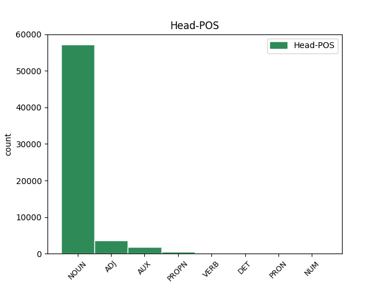

Distribution of features within this leaf


Agreement Rules sorted by frequency.
When the dependent token is None
1 Naproti _ _ _ _ 0 _ _ _
2 tomu _ _ _ _ 0 _ _ _
3 prvky _ _ _ _ 0 _ _ _
4 , _ _ _ _ 0 _ _ _
5 kterým _ _ _ _ 0 _ _ _
6 chybí _ _ _ _ 0 _ _ _
7 jeden _ _ _ _ 0 _ _ _
8 obvodový _ _ _ _ 0 _ _ _
9 elektron _ _ _ _ 0 _ _ _
10 do _ _ _ _ 0 _ _ _
11 úplného _ _ _ _ 0 _ _ _
12 obsazení _ _ _ _ 0 _ _ _
13 krajní _ _ _ _ 0 _ _ _
14 slupky _ _ _ _ 0 _ _ _
15 a _ _ _ _ 0 _ _ _
16 tvoří _ _ _ _ 0 _ _ _
17 jednomocné _ _ _ _ 0 _ _ _
18 záporné _ _ _ _ 0 _ _ _
19 ionty _ _ _ _ 0 _ _ _
20 a _ _ _ _ 0 _ _ _
21 vznikající _ _ _ _ 0 _ _ _
22 připoutáním _ _ _ _ 0 _ _ _
23 dalšího další ADJ AAIS2----1A---- Animacy=Inan|Case=Gen|Degree=Pos|Gender=Masc|Number=Sing|Polarity=Pos 24 mod _ _
24 elektronu elektron NOUN NNIS2-----A---- Animacy=Inan|Case=Gen|Gender=Masc|Number=Sing|Polarity=Pos 0 _ _ _
25 . _ _ _ _ 0 _ _ _
Disagree Examples:
1 Barevné _ _ _ _ 0 _ _ _
2 provedení _ _ _ _ 0 _ _ _
3 a _ _ _ _ 0 _ _ _
4 označení _ _ _ _ 0 _ _ _
5 motocyklů motocykl NOUN NNIP2-----A---- Animacy=Inan|Case=Gen|Gender=Masc|Number=Plur|Polarity=Pos 0 _ _ _
6 a _ _ _ _ 0 _ _ _
7 jiných _ _ _ _ 0 _ _ _
8 vozidel _ _ _ _ 0 _ _ _
9 používaných používaný ADJ AANP2----1A---- Case=Gen|Degree=Pos|Gender=Neut|Number=Plur|Polarity=Pos 5 mod _ LDeriv=použít
10 Sborem _ _ _ _ 0 _ _ _
11 národní _ _ _ _ 0 _ _ _
12 bezpečnosti _ _ _ _ 0 _ _ _
13 je _ _ _ _ 0 _ _ _
14 obdobné _ _ _ _ 0 _ _ _
15 . _ _ _ _ 0 _ _ _
1 Nemotorovým motorový ADJ AAIS7----1N---- Animacy=Inan|Case=Ins|Degree=Pos|Gender=Masc|Number=Sing|Polarity=Neg 2 mod _ _
2 vozidlem vozidlo NOUN NNNS7-----A---- Case=Ins|Gender=Neut|Number=Sing|Polarity=Pos 0 _ _ _
3 se _ _ _ _ 0 _ _ _
4 rozumí _ _ _ _ 0 _ _ _
5 vozidlo _ _ _ _ 0 _ _ _
6 pohybující _ _ _ _ 0 _ _ _
7 se _ _ _ _ 0 _ _ _
8 pomocí _ _ _ _ 0 _ _ _
9 lidské _ _ _ _ 0 _ _ _
10 nebo _ _ _ _ 0 _ _ _
11 zvířecí _ _ _ _ 0 _ _ _
12 síly _ _ _ _ 0 _ _ _
13 , _ _ _ _ 0 _ _ _
14 jízdní _ _ _ _ 0 _ _ _
15 kolo _ _ _ _ 0 _ _ _
16 , _ _ _ _ 0 _ _ _
17 potahové _ _ _ _ 0 _ _ _
18 vozidlo _ _ _ _ 0 _ _ _
19 , _ _ _ _ 0 _ _ _
20 ruční _ _ _ _ 0 _ _ _
21 vozík _ _ _ _ 0 _ _ _
22 . _ _ _ _ 0 _ _ _
1 Zde _ _ _ _ 0 _ _ _
2 se _ _ _ _ 0 _ _ _
3 konkretizují _ _ _ _ 0 _ _ _
4 zvláštní _ _ _ _ 0 _ _ _
5 okolnosti _ _ _ _ 0 _ _ _
6 , _ _ _ _ 0 _ _ _
7 za _ _ _ _ 0 _ _ _
8 nichž _ _ _ _ 0 _ _ _
9 lze _ _ _ _ 0 _ _ _
10 vjet _ _ _ _ 0 _ _ _
11 v _ _ _ _ 0 _ _ _
12 podélném _ _ _ _ 0 _ _ _
13 směru _ _ _ _ 0 _ _ _
14 na _ _ _ _ 0 _ _ _
15 tramvajový _ _ _ _ 0 _ _ _
16 pás _ _ _ _ 0 _ _ _
17 , _ _ _ _ 0 _ _ _
18 dříve _ _ _ _ 0 _ _ _
19 na _ _ _ _ 0 _ _ _
20 tramvajové _ _ _ _ 0 _ _ _
21 koleje _ _ _ _ 0 _ _ _
22 , _ _ _ _ 0 _ _ _
23 neboť _ _ _ _ 0 _ _ _
24 dosavadní _ _ _ _ 0 _ _ _
25 formulace _ _ _ _ 0 _ _ _
26 " _ _ _ _ 0 _ _ _
27 jen _ _ _ _ 0 _ _ _
28 je _ _ _ _ 0 _ _ _
29 - _ _ _ _ 0 _ _ _
30 li _ _ _ _ 0 _ _ _
31 to _ _ _ _ 0 _ _ _
32 nutné _ _ _ _ 0 _ _ _
33 " _ _ _ _ 0 _ _ _
34 byla být AUX VpQW---XR-AA--- Gender=Fem,Neut|Number=Plur,Sing|Polarity=Pos|Tense=Past|VerbForm=Part|Voice=Act 0 _ _ _
35 příliš _ _ _ _ 0 _ _ _
36 obecná obecný ADJ AAFS1----1A---- Case=Nom|Degree=Pos|Gender=Fem|Number=Sing|Polarity=Pos 34 comp:pred _ SpaceAfter=No
37 . _ _ _ _ 0 _ _ _
1 Základní _ _ _ _ 0 _ _ _
2 práva _ _ _ _ 0 _ _ _
3 a _ _ _ _ 0 _ _ _
4 povinnosti _ _ _ _ 0 _ _ _
5 organizací _ _ _ _ 0 _ _ _
6 spravujících _ _ _ _ 0 _ _ _
7 bytový _ _ _ _ 0 _ _ _
8 majetek _ _ _ _ 0 _ _ _
9 , _ _ _ _ 0 _ _ _
10 dále _ _ _ _ 0 _ _ _
11 jen _ _ _ _ 0 _ _ _
12 správa _ _ _ _ 0 _ _ _
13 domu _ _ _ _ 0 _ _ _
14 , _ _ _ _ 0 _ _ _
15 a _ _ _ _ 0 _ _ _
16 občanů _ _ _ _ 0 _ _ _
17 při _ _ _ _ 0 _ _ _
18 užívání _ _ _ _ 0 _ _ _
19 bytů _ _ _ _ 0 _ _ _
20 i _ _ _ _ 0 _ _ _
21 místností místnost NOUN NNFP2-----A---- Case=Gen|Gender=Fem|Number=Plur|Polarity=Pos 0 _ _ _
22 nesloužících sloužící ADJ AGIP2-----N---- Animacy=Inan|Aspect=Imp|Case=Gen|Gender=Masc|Number=Plur|Polarity=Neg|Tense=Pres|VerbForm=Part|Voice=Act 21 mod _ LDeriv=sloužit
23 k _ _ _ _ 0 _ _ _
24 bydlení _ _ _ _ 0 _ _ _
25 upravuje _ _ _ _ 0 _ _ _
26 Občanský _ _ _ _ 0 _ _ _
27 zákoník _ _ _ _ 0 _ _ _
28 . _ _ _ _ 0 _ _ _
1 Jde _ _ _ _ 0 _ _ _
2 zejména _ _ _ _ 0 _ _ _
3 o _ _ _ _ 0 _ _ _
4 zavádění _ _ _ _ 0 _ _ _
5 nebo _ _ _ _ 0 _ _ _
6 změnu _ _ _ _ 0 _ _ _
7 vodovodního _ _ _ _ 0 _ _ _
8 , _ _ _ _ 0 _ _ _
9 elektrického _ _ _ _ 0 _ _ _
10 , _ _ _ _ 0 _ _ _
11 plynového _ _ _ _ 0 _ _ _
12 i _ _ _ _ 0 _ _ _
13 jiného _ _ _ _ 0 _ _ _
14 vedení _ _ _ _ 0 _ _ _
15 , _ _ _ _ 0 _ _ _
16 odstraňování _ _ _ _ 0 _ _ _
17 a _ _ _ _ 0 _ _ _
18 vyměňování _ _ _ _ 0 _ _ _
19 kamen _ _ _ _ 0 _ _ _
20 , _ _ _ _ 0 _ _ _
21 zejména _ _ _ _ 0 _ _ _
22 osazování _ _ _ _ 0 _ _ _
23 plynových plynový ADJ AAFP2----1A---- Case=Gen|Degree=Pos|Gender=Fem|Number=Plur|Polarity=Pos 26 mod _ _
24 a _ _ _ _ 0 _ _ _
25 olejových _ _ _ _ 0 _ _ _
26 kamen kamna NOUN NNNP2-----A---- Case=Gen|Gender=Neut|Number=Plur|Polarity=Pos 0 _ _ _
27 , _ _ _ _ 0 _ _ _
28 vysekávání _ _ _ _ 0 _ _ _
29 otvorů _ _ _ _ 0 _ _ _
30 do _ _ _ _ 0 _ _ _
31 komínů _ _ _ _ 0 _ _ _
32 , _ _ _ _ 0 _ _ _
33 zazdívání _ _ _ _ 0 _ _ _
34 nebo _ _ _ _ 0 _ _ _
35 prorážení _ _ _ _ 0 _ _ _
36 oken _ _ _ _ 0 _ _ _
37 , _ _ _ _ 0 _ _ _
38 přemísťování _ _ _ _ 0 _ _ _
39 dveří _ _ _ _ 0 _ _ _
40 , _ _ _ _ 0 _ _ _
41 odstraňování _ _ _ _ 0 _ _ _
42 příček _ _ _ _ 0 _ _ _
43 . _ _ _ _ 0 _ _ _